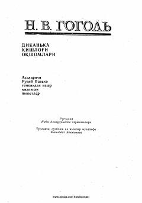

DQNikolay Gogolning Ukrainaning Dikanka qishlog'i hayoti va urf-odatlarini aks ettiruvchi mashhur qissalar to'plami.
Ushbu mashhur asar rus yozuvchisi Nikolay Gogol qalamiga mansub bo'lib, Ukrainaning Dikanka qishlog'idagi hayot, urf-odatlar va sirli voqealarni o'z ichiga oladi. Kitobda Rudyiy Pan'ko nomi ostida jamlangan qiziqarli qissalar va qishloq odamlarining turmush tarzi tasvirlangan. Asar o'zining hajviy ruh va milliy koloritga boyligi bilan ajralib turadi.